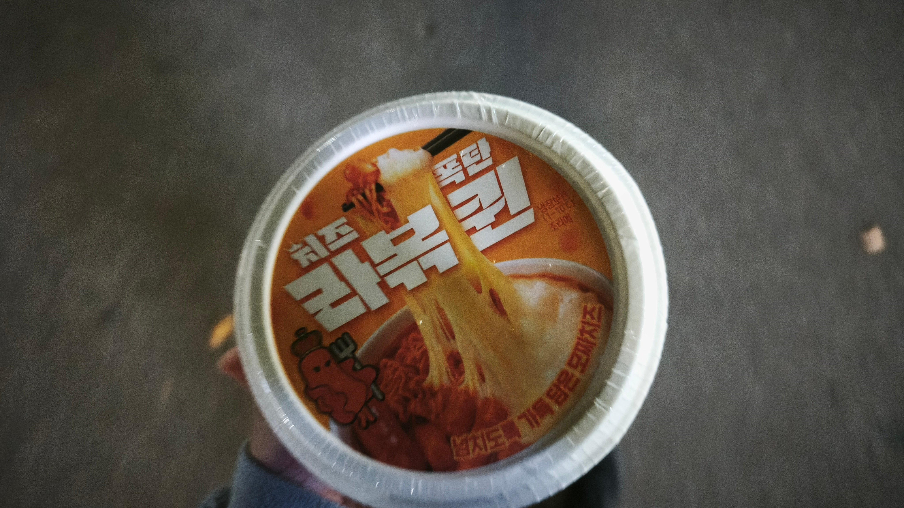
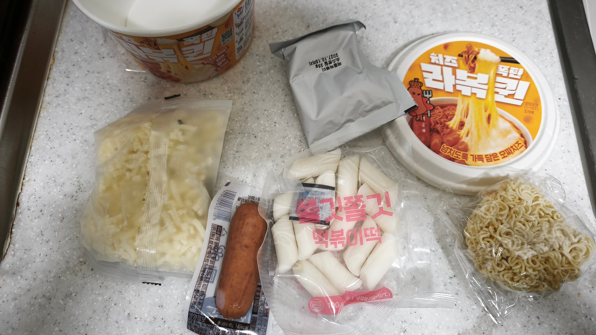
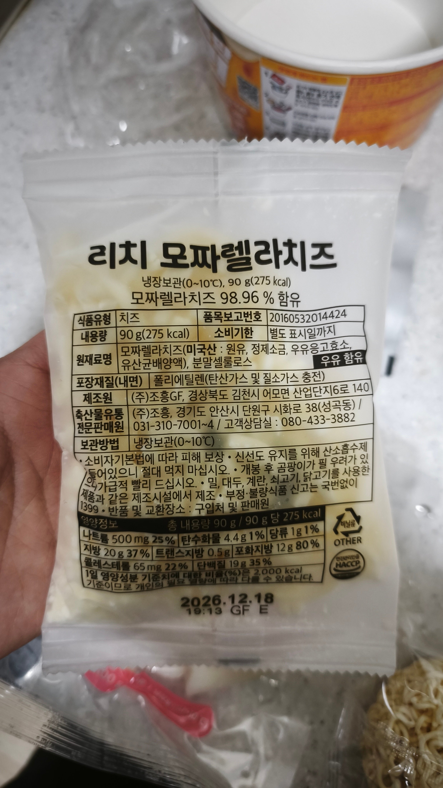
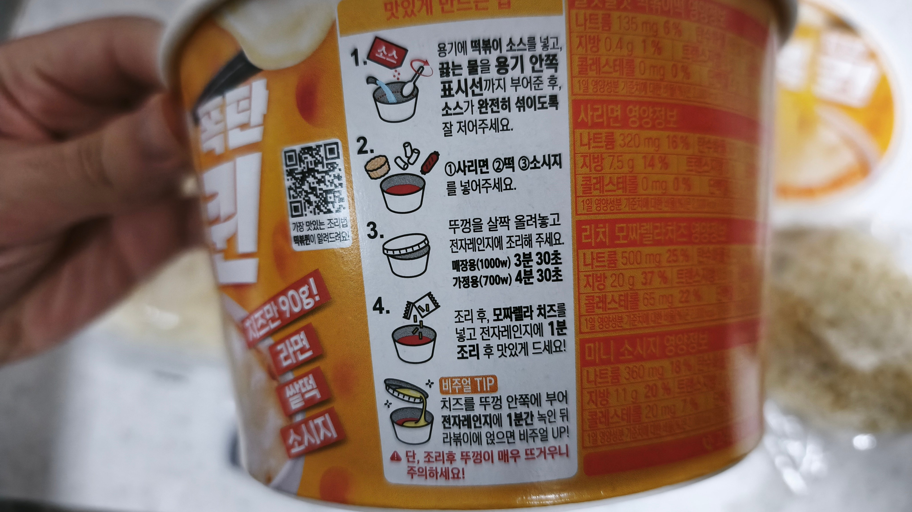
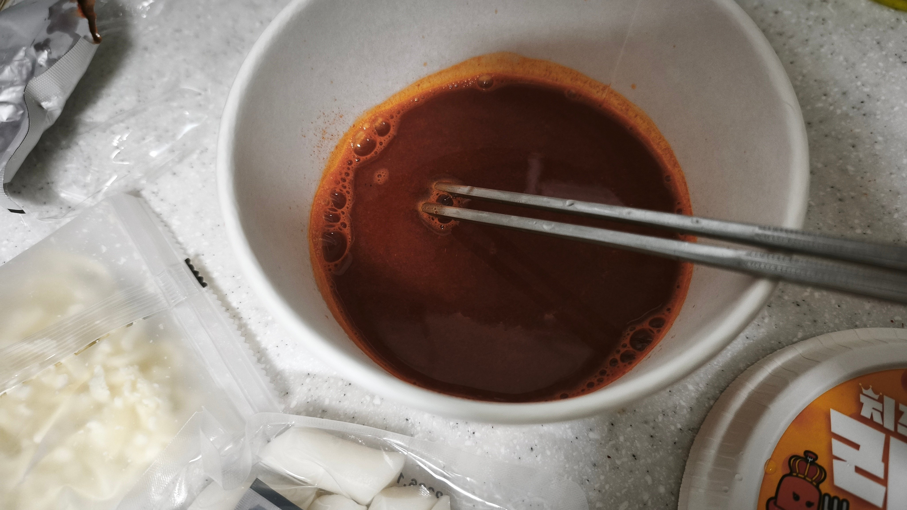
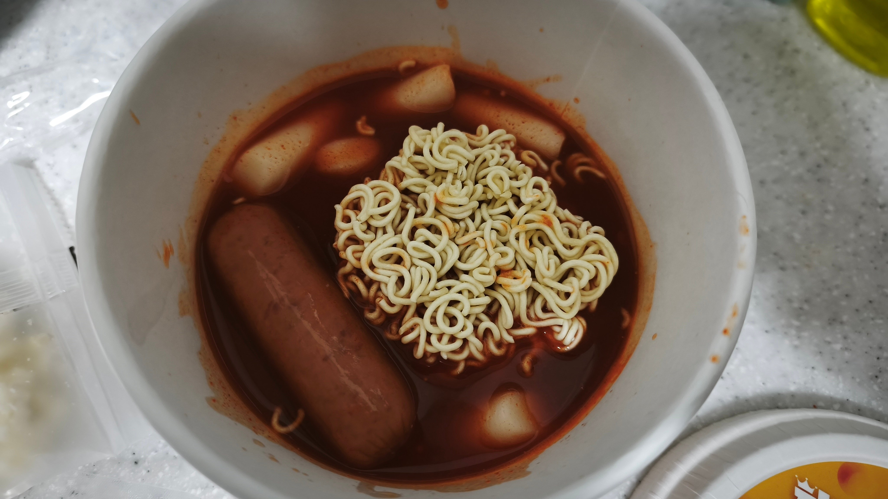
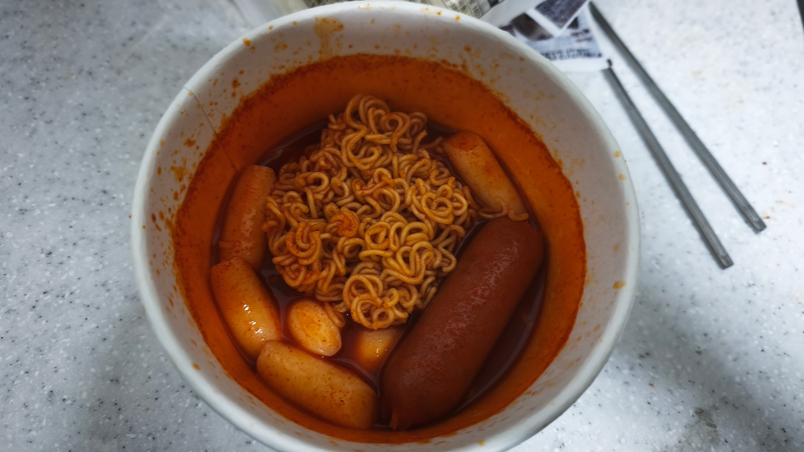
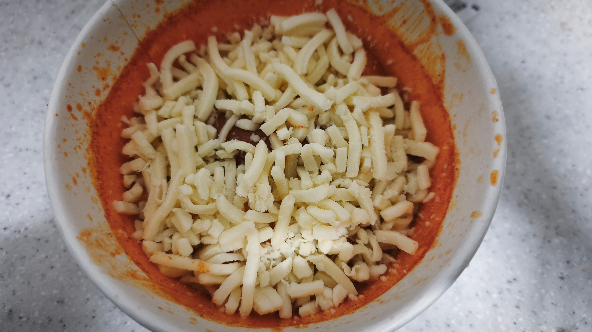
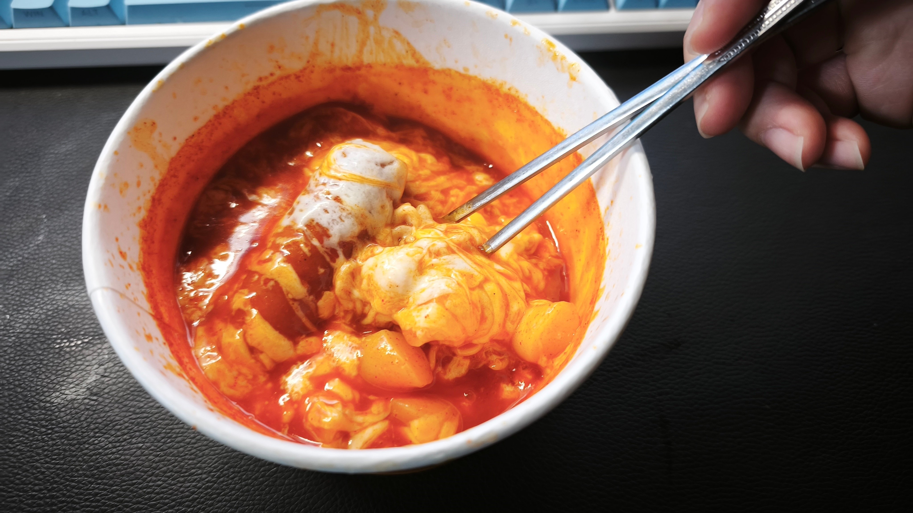

바이럴 아님
안그래도 구하기 힘든제품....
동네에서 일주일만에 찾은 귀한 몸임
가격은 5000원
개드립에도 가끔 올라온
떡볶퀸이라는 유투버가 만든 제품임



구성품은 5000원답게 푸짐하긴 함
단가 절반은 아마 치즈가 차지할거임
실제로 소세지와 함께 세일즈 포인트기도 하고
모짜렐라 치즈 90그람
비싼몸 답게 만드는 방법도 남다른데
사리면 떡 소시지 넣는 순서를
반드시 지켜달라 함(유투버가)
+ 떡은 꼭 물에 잠기게



전자레인지 3분30초 후 치즈넣고 1분더



비쥬얼은 합격
맛은 막 뛰어나고 그런건 아닌데
편의점 떡볶이+라볶이중에는 최상위티어라 생각함
편의점 특유의 떡맛이 안나네
그리고 치즈가 ㅋㅋㅋㅋㅋㅋㅋㅋ
이거 치즈가 다한거 맞음
맵기는 신라면보다 조금 덜맵나
이전의 떡볶퀸이 만든 떡볶이는
편의점 특유의 떡맛+꽤 매웠는데
치즈 감안해도 맵기는 낮아지고 좀 더 달아진듯
그래서 재구매 하냐 한다면
보이는 족족 집어올듯
요새 5000원 분식 떡볶이 생각하면
이게 압도적으로 낫다 생각함
보통 가짜치즈 많이 쓰는데 진짜치즈 인듯
미국산이면 다비스코나 사푸토 썻을 확률이 높고
다른 피자집에서도 쓰는 것들이라 괜춘함